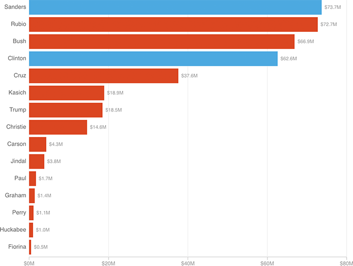

This election cycle, candidates and their outside groups (like super PACs) have spent an estimated $400 million on TV ads. Bernie Sanders’ campaign has spent the most thus far, at nearly $74 million.

Notes
Spending totals are from Jan. 1, 2015, through May 8, 2016.